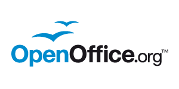

During the last 10 years OpenOffice.org™ has evolved to a quite large project in the FLOSS world and a successful product in the office productivity suite market. Together with our product the OpenOffice.org brand spread over the world. This brand has a tradition of quality and it remains faithful to its origins. Instead of a complete new design we started a refresh. It points out the key components and improves the overall impression to gain even more strength and confidence.
The OpenOffice.org Logo and the seagulls are well recognized - even if not applied consistently today. Therefore it is more than reasonable to retain the text string, the color code blue/black and the seagulls. They express the openness, freedom and collaboration we experience. A new blue - friendly and modern – is used. The new tint reminds of a blue sky in a sunny day and with the seagulls also being blue and flying, the sensation of freedom and openness is reinforced.
The seagulls are established as a main visual element. They are not only part of the logo but also construct a standalone symbol. They stand for the freedom of OpenOffice.org, as they are freely flying birds. There are two of them, which reinforces the value of collaboration and openness. The lighter blue emphasizes this idea even more. The slight changes in their shape and position make them more scalable and rounder.
The above shown 2D symbol is the unaltered stable form. It can be the basis for derived versions that reflect the style of a certain environment or seasonal fashion trends.
After the introduction of the refreshed logo, new brand elements based on the refreshed logo were integrated in the OpenOffice.org graphical user interface. For more detailed information please visit Visual Design Refresh
The efforts for a consistent OpenOffice.org branding led to the creation of the Branding Initiative. The main aim of this initiative is to consolidate a consistent branding that expresses the spirit of OpenOffice.org. For concrete tasks, like the creation of specific GUI elements stakeholders of various projects collaborate in I-Teams. For more information on the I-Teams visit the Application Rebranding Project homepage


Please see the Apache OpenOffice Trademarks page for information on the use of, and how to request the use of the OpenOffice.org logos and other trademarked items.